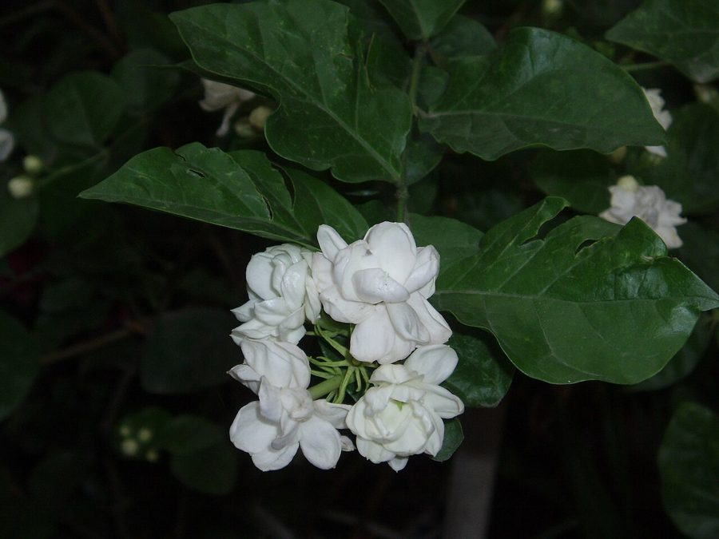

मोगराArabian Jasmine
Jasminum sambac · Oleaceae · FLR-0307

- Scientific name वैज्ञानिक नाम
- Jasminum sambac (L.) Aiton
- Family कुल
- Oleaceae
- Hindi हिंदी
- मोगरा
- Local names स्थानीय नाम
- mogra, bela, motia, arabian jasmine
- Status here यहाँ की स्थिति
- cultivated
- Movement आवागमन
- Resident, here all year
- Known from कहाँ दर्ज
- Others have published records from the Basti–Ayodhya districts बस्ती–अयोध्या के ज़िलों से दूसरों के प्रकाशित अभिलेख
- IUCN IUCN
- not evaluated
- Review समीक्षा
- audited and independently read
When to look कब देखें
Present all year. साल भर मौजूद।
Uses and possibilities उपयोग और संभावनाएँ
Drawn from the documented uses in the profile below, where each is labelled traditional, current or a research lead. All uses →
Tell it apart from इनसे अलग पहचानें
मोगरा / Arabian Jasmine
Jasminum sambac (L.) Aiton — Oleaceae
मोगरा — सबसे सुगंधित फूलों की झाड़ी, जिसके छोटे, सफ़ेद, तारे के आकार के फूल साल भर खिलते हैं। इसकी खुशबू बहुत मीठी और दूर तक जाती है। हर गाँव की औरतें मोगरे की माला पहनती हैं, और मंदिरों में रोज़ इसके फूल चढ़ते हैं। चाय के साथ भी पीसा जाता है। सबसे आसानी से उगने वाली झाड़ी।
Quick Identification त्वरित पहचान
| Feature | Description |
|---|---|
| Size | Evergreen shrub 1–2 m tall, much-branched, trailing or spreading |
| Leaves | Opposite, ovate-lanceolate, 5–9 cm long, dark green, glossy, entire; small petioles |
| Flowers | Small, white, five to nine petals (usually six to eight), 1–2 cm diameter, star-shaped, intensely fragrant, borne in small clusters at branch tips year-round |
| Fruit | Small, black, berry-like drupe, 0.8–1 cm, rarely seen in cultivation |
| The test | Intensely fragrant, small white star-shaped flowers; opposite, glossy leaves; trailing habit |
Field tip: Arabian Jasmine is the most fragrant jasmine cultivated in eastern UP. Look for small white, five to nine-petalled flowers in dense clusters. The plant is usually low and trailing. Every part of the plant is fragrant. It flowers year-round, especially in spring and monsoon.
हिंदी — कैसे पहचानें: सबसे सुगंधित। छोटे, सफ़ेद, तारे के आकार के फूल। पत्तियाँ सामने-सामने, चमकदार। साल भर खिलता है।
Morphology आकारिकी
Biometrics (cultivated plants in gardens):
| Measurement | Range |
|---|---|
| Height | 1–2 m (spreading) |
| Leaf length | 5–9 cm |
| Leaf width | 2–4 cm |
| Flower diameter | 1–2 cm |
| Petal number | 6–8 (occasionally 5–9) |
Stem and branches: Erect to trailing, much-branched, green, woody when mature.
Leaves: Opposite, ovate-lanceolate, 5–9 cm long, 2–4 cm wide, dark green, glossy and smooth, entire margin; short petiole.
Flowers: Small, white, 1–2 cm diameter, with five to nine petals (usually six to eight) arranged in a star shape. Extremely fragrant, especially at night. Borne in small terminal or axillary clusters. The calyx is divided into needle-like segments.
Fruit: Small, black, berry-like drupe, 0.8–1 cm diameter; rarely produced in cultivation.
हिंदी: पत्तियाँ सामने-सामने, अंडे जैसी। फूल छोटे, सफ़ेद, तारे जैसे, बहुत सुगंधित। गहरे काले छोटे फल।
Behaviour & Ecology व्यवहार और पारिस्थितिकी
Arabian Jasmine is a tropical shrub, native to South Asia and West Asia, cultivated throughout tropical and warm temperate regions. It grows best in warm, well-drained soils and is moderately drought-tolerant once established. The highly fragrant flowers are visited by moths and other night-flying insects, and by bees during the day. The plant is long-lived and easy to maintain. It does not naturalize in eastern UP and is purely ornamental.
हिंदी: गर्म क्षेत्रों में बहुत अच्छा बढ़ता है। सूखा सहन कर लेता है। मधुमक्खियों और कीटों को आकर्षित करता है। कहीं जंगली नहीं होता।
Life Cycle / Phenology जीवन चक्र
| Month / season | Event |
|---|---|
| Year-round | Continuous flowering potential |
| March–September | Peak flowering; abundant blooms |
| October–February | Some flowering; reduced in winter |
| 1–2 years from cuttings | First flowering |
The plant is evergreen. Lifespan in cultivation is 15–25 years.
हिंदी: साल भर खिलता है। मार्च-सितंबर में सबसे अधिक। कटिंग से आसानी से उग जाता है।
Associated Species / Interactions संबंधित प्रजातियाँ
- Pollinators: Bees, moths, and night-flying insects visit the fragrant flowers.
- Garden companions: Often grown in pots or baskets; placed in gardens and on windowsills.
Pests and Diseases कीट और रोग
- Mealybugs on stems and leaves.
- Scale insects on woody stems.
- Spider mites in dry conditions.
- No significant fungal diseases.
Agricultural / Human Relevance कृषि प्रासंगिकता
Ornamental and cultural use (documented use):
Arabian Jasmine is valued for its intensely fragrant flowers, which are used in garlands, religious offerings, and personal adornment. Women across South Asia wear jasmine garlands, particularly in the evening. The flowers are offered in temples daily. The plant is culturally significant and embedded in social customs.
Tea scenting: The flowers are dried and used to scent green and white teas, particularly in East Asia. A minor industry exists for jasmine tea production, though less common in South Asia.
Today. Arabian Jasmine is one of the most beloved ornamental plants in South Asian gardens. It requires minimal care and thrives in warm climates. The fragrant flowers are harvested for local sale in markets.
Research direction (a lead, not a result). The cultural significance of Arabian Jasmine in South Asian societies and its traditional uses merit ethnobotanical documentation.
हिंदी: महिलाओं के गहनों में, पूजा में, चाय में। सबसे सुगंधित। हर घर में लगता है। बाज़ार में भी बिकता है।
Expected Locally स्थानीय रूप से अपेक्षित
Not a field record. Written from published accounts for eastern Uttar Pradesh. No confirmed local sighting yet — if you have seen it, that is what the atlas needs.
अभी तक स्थानीय पुष्टि नहीं। यह विवरण प्रकाशित स्रोतों से है, किसी अवलोकन से नहीं।
GBIF holds published records from the wider Awadh–Purvanchal plain. Arabian Jasmine is to be expected in gardens and homesteads throughout Basti and Ayodhya districts. It is widely grown around homes for its fragrance and its use in worship and garlands.
Distribution वितरण
Global range: Native to South Asia and West Asia; cultivated worldwide in tropical regions.
In India: Widely cultivated in gardens, temples, and markets.
In Uttar Pradesh: Cultivated in gardens and parks.
In Basti district / eastern UP: Common in home gardens; occasionally sold in markets during flowering season.
Research Questions शोध प्रश्न
- How many jasmine plants are there in your village, and who grows them? — Walk through and map locations.
- When are the flowers most fragrant — morning, afternoon, or night? — Note times of peak fragrance.
- How many flowers does a plant produce per day, and how long does each last? — Count and observe individual flowers.
- Who buys jasmine flowers in the local market, and for what purpose? — Ask market vendors and buyers.
- How is jasmine used in your family or community — for worship, for wearing, or for other purposes? / मोगरे का आपके घर में या गाँव में क्या इस्तेमाल होता है? — Document traditional uses.
Similar Species मिलती-जुलती प्रजातियाँ
| Species | How to tell apart | हिंदी | |
|---|---|---|---|
| Common Jasmine (Jasminum officinale) | Flowers are larger (1.5–2 cm); leaflets are larger and more lanceolate; similar fragrance but slightly less intense | सफ़ेद जीवा — बड़े फूल; कम सुगंधित | |
| [[crape_jasmine\ | Crape Jasmine]] (Tabernaemontana divaricata) | Flowers are larger (2–3 cm) with spiral petals; no true jasmine; different family (Apocynaceae) | चाँदनी — बड़े, घूमती पँखुड़ियाँ |
| Carolina Jasmine (Gelsemium) | Climber, not a shrub; yellow flowers; different family | पीला जीवा — पीले फूल; बेल |
Field rule: A low, much-branched shrub with small, white, intensely fragrant, star-shaped flowers and opposite, glossy, ovate leaves is Arabian Jasmine.
Taxonomy & Classification वर्गीकरण
Original description. Originally described by Linnaeus as Jasminum sambac in Species Plantarum (1753). The epithet sambac comes from the Arabic/Urdu name sambak or sambagh.
Subspecies. Monotypic — no subspecies are currently recognised.
Family and order placement. Oleaceae (olive family), order Lamiales. Jasminum includes over 200 species of jasmine.
Phylogenetic notes. Jasminum sambac is the type species for the genus and is closely related to J. officinale and J. auriculatum.
IUCN status rationale. Not evaluated. Native to South Asia; widely cultivated.
Photo Gallery फोटो गैलरी
Photos needed आवश्यक फोटो
- [ ] Whole plant with flowers
- [ ] Close-up of white star-shaped flowers
- [ ] Glossy, opposite leaves
- [ ] Plant in market or garland
- [ ] Plant at night (if possible)
No photos yet — add field photos to media/species/arabian_jasmine/ and run node scripts/sync_photos.js.
References संदर्भ
- Linnaeus, C. (1753). Species Plantarum, vol. 1, p. 7. [original description]
- Aiton, W.T. (1811). Hortus Kewensis, 3rd edn, vol. 1. Royal Botanic Gardens, Kew.
- Hooker, J.D. (1875). The Flora of British India, vol. 3. L. Reeve, London.
- Kirtikar, K.R. & Basu, B.D. (1935). Indian Medicinal Plants, 2nd ed., vol. 3. Lalit Mohan Basu, Allahabad.
- Mabberley, D.J. (1997). The Plant-Book: A Portable Dictionary of the Vascular Plants. Cambridge University Press.
- GBIF Occurrence Data — Jasminum sambac, India (2026).
Source file: species/flora/shrubs/arabian_jasmine.md